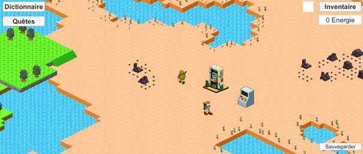
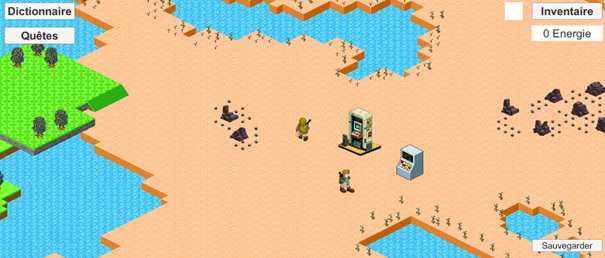

My projects
Here you will discover all the projects that I have realised
CyberFactory
CyberFactory is a project I carried out in my first year at Epita with three classmates.
The project began in December 2022 and ended in June 2023. It was a free project,
so we created our specifications and then carried out the project. CyberFactory is a game of management and exploration.
Description of the game
At the start of the game, the player crashes his rocket on an unknown planet.
His sole aim is to repair his rocket and return home. While looking for a way home,
he meets a robot who offers to help. The robot will help the player repair his rocket by giving him various tips.
To repair his rocket, the player will need various items that he'll have to build. To do this,
he'll need to repair the factory on this planet.
The player begins by learning to move around and use the various interfaces at his disposal.
Then he'll turn on the factory's generator, which will enable him to build items once he's collected the necessary resources.
The player must then explore the planet to find the various mines and energy machines.
The mines will enable the player to harvest the resources needed to create more complex items,
while the energy recovered from the energy machines will enable the player to operate the machines.
The player has to be careful with the various animals present on the map.
These animals behave in a very specific way. Some animals voluntarily approach the player,
stealing items from the player's inventory. But other animals move away from the player,
increasing the quantity of one of the items he or she possesses.
.png) 

The player will have to follow the quests given to him/her,
as they will enable him/her to obtain rewards or unlock machines.
The further the player progresses in the game and creates items,
the closer they get to designing the final items, i.e. the quantum computer, the teleporter and the rocket.
The teleporter will unlock the multiplayer mode. This will enable players to join their friends and progress together.
To better interact with each other, players will be able to exchange items via a storage terminal.
This will enable players to really help each other out.
This teleporter has another feature which is available even if the player has not yet repaired the teleporter.
Thanks to this item, the player can teleport to all other biomes.
Once the rocket has been repaired, the player can return home.
OCR
OCR for Optical Caption Recognition is the project realised during my second year at Epita in collaboration with three classmates